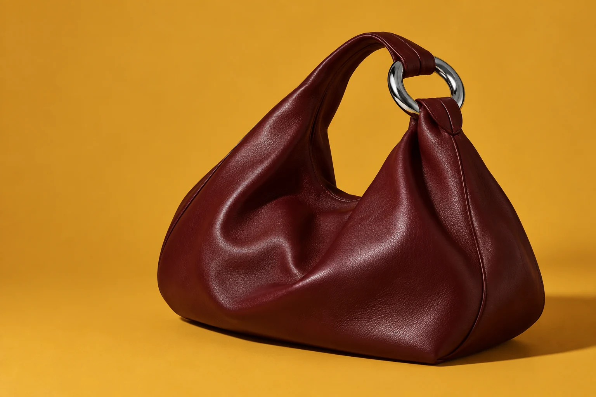
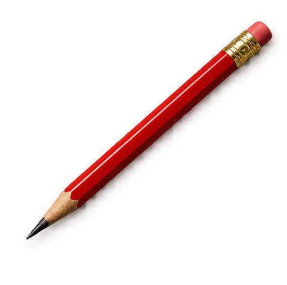
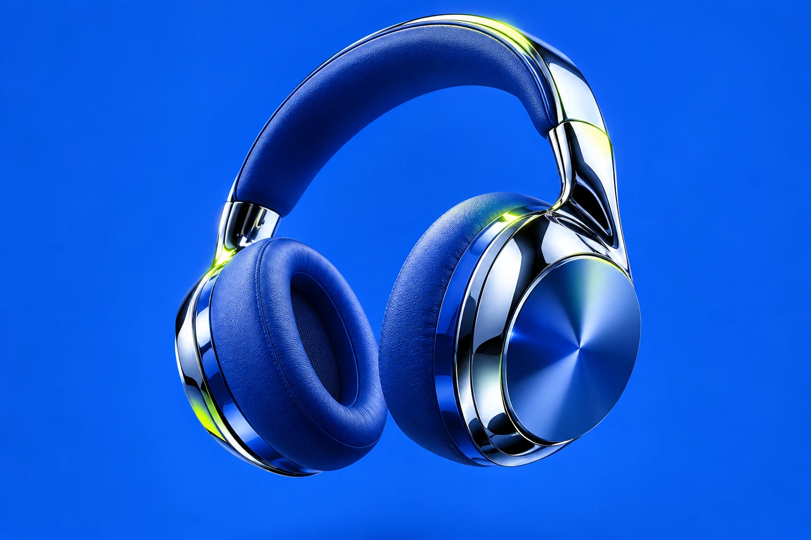

FORMEEVERYDAY. EXTRAORDINARY.
A NEW PERSPECTIVE ON EVERYDAYView projectFORME
A little less ordinary.




I turn “what if” into
things people love to use.
Make it useful.
Make it feel good.
Then add a little
unexpected.
A few ideas brought to life.
Different challenges. Same curiosity.

A little less ordinary.

Sound, with a point of view.
A calmer kind of daily habit.
Scroll through the way I work.
Who is this for? What gets in their way? What would make their day a little easier?
Turn the first spark into something you can click, question, and improve.
A clear next step. A thoughtful transition. A button exactly where you need it.
Curiosity is
my favourite
design tool.
Shaping identities, websites, and digital products for ambitious brands.
FREELANCE · FRANCE / EVERYWHEREBringing user journeys, content, and visual storytelling into one clear experience.
DESIGN · MARKETING · RESEARCHPhotography, filmmaking, and a healthy habit of asking “why?”
EXPERIMENT. MAKE. REPEAT.Talk to people, challenge assumptions, and turn an open brief into a clear problem.
Sketch, prototype, and explore. Good ideas get better when you can actually try them.
Test the flow, refine the rhythm, and carry the design through to a thoughtful handoff.
From the first conversation
to the final interaction.
Distinctive websites that guide people naturally, tell a clear story, and make the next step feel easy.
WEBSITES · RESPONSIVE UI · E-COMMERCEUseful products shaped around real needs. From untangling a journey to prototyping the details.
RESEARCH · USER FLOWS · APP DESIGNA point of view that people remember. Color, imagery, and typography working together with purpose.
VISUAL IDENTITY · EDITORIAL · CAMPAIGNSA little rhythm in the interface. Transitions that explain, feedback that reassures, and details that delight.
PROTOTYPES · SCROLL STORIES · MICROINTERACTIONSA few small experiments.
Go on, give them a try.
Same letters. A different feeling.
Pick a color. Change the mood.
Let’s make something worth caring about.
Let’s talk hello@gireesh.designYour next great idea